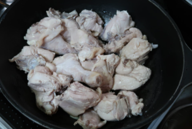
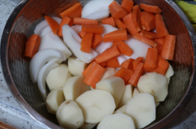

Korea Food
재료 리스트
닭 1마리 | 대파 2대 | 청양고추 1개 | 홍고추 2개 | 당근 1/4개 | 양파 1개 | 감자 4개 | 간마늘 1스푼 | 진간장 3/4컵 | 굵은 소금 약간 | 고춧가루 1/2컵 | 황설탕 3수저 | 후추
레시피
1. 닭 손질
손질된 닭볶음탕용 닭을 준비하여 흐르는 물에 깨끗히 세척한 후 가위집을 내주세요.
끓는 물에 표면이 익을 정도로 삶은 뒤 체에 받쳐 물기를 제거해주세요.
양념에 조리기 전에 닭고기를 참기름에 한번 볶아주면 닭의 비린맛을 제거할 수 있습니다.

2. 재료손질
감자를 껍질을 제거한 후 1/4크기로 먹기 좋게 썰고 양파와 당근도 반으로 잘라 두껍지 않게 썰어주세요.
3. 끓이기
닭고기는 조리할 때 처음부터 양념을 넣으면 텁텁한 맛이 날수 있기 때문에 익은 다음 양념을 해주세요.
물과 설탕, 고춧가루를 넣어 강불에 끓이고 닭고기가 하얗게 익기 시작하면 감자, 양념, 대파에 간장, 다진마늘 등의 양념장을 넣어주세요.
센불에서 끓이다가 감자를 넣어 15분이상 끓여주세요. 단, 간장만 넣으면 새까만해질 수 있기 때문에 굵은 소금으로 간을 맞춰주세요.

닭볶음탕 완성 !!